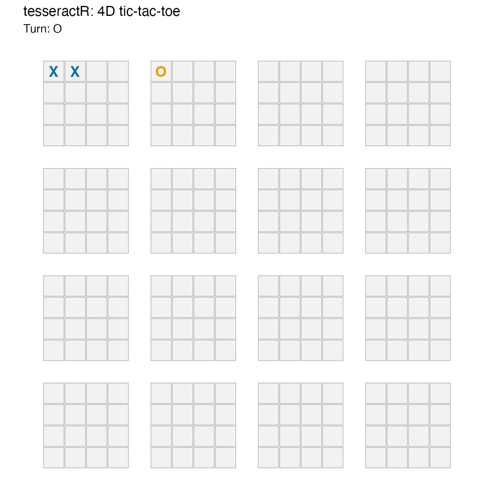
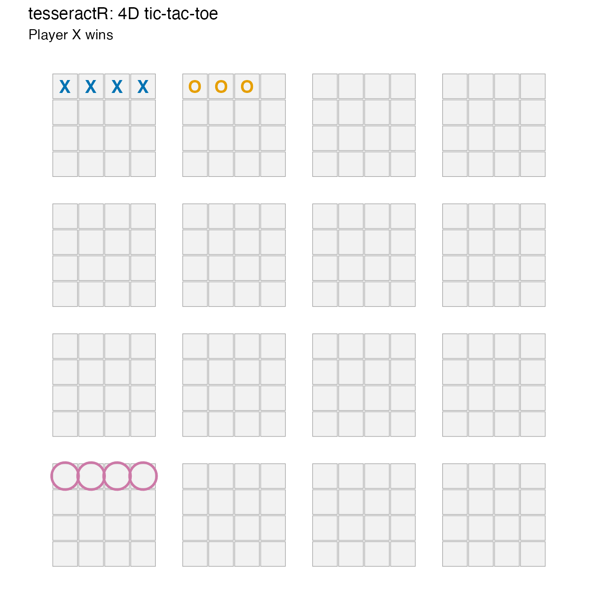
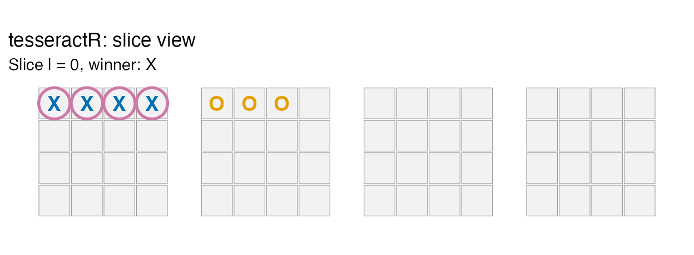

What is 4D tic-tac-toe?
tesseractR plays tic-tac-toe on a four-dimensional
4×4×4×4 hypercube — 256 cells indexed by
(i, j, k, l), each coordinate in 0:3. A
line is any four cells whose successive differences equal a
constant non-zero direction vector in {−1, 0, 1}^4. After
collapsing reversed directions there are 520 winning
lines by the standard formula
((n + 2)^d − n^d) / 2 evaluated at
d = n = 4.
The geometry is the only thing that’s harder than ordinary tic-tac-toe. Everything else (engine, AI, visualization, analysis) is the usual surface, just generalised over the 256-cell board.
A first game
Each cell has a unique linear index in 1:256 derived
from idx = 1 + i + 4j + 16k + 64l. You can call
tsr_move() with explicit coordinates or with
cell =:
b <- tsr_new_board()
b <- tsr_move(b, 0L, 0L, 0L, 0L) # X at (0,0,0,0) = cell 1
b <- tsr_move(b, cell = 17L) # O at cell 17
b <- tsr_move(b, 1L, 0L, 0L, 0L) # X at (1,0,0,0) = cell 2
print(b)
#>
#> ── <ttt_board> ──
#>
#> 4x4x4x4 board, 256 cells
#> moves played: 3
#> to move: O
#> legal moves: 253
tsr_plot(b)
The plot draws the hypercube as a 4×4 outer grid (indexed by
(k, l)) where each cell contains an inner 4×4 board
(indexed by (i, j)). Player X is the blue mark; player O is
orange (Okabe–Ito).
Detecting a win
Win detection scans the cached 520-line table against the board state. Continuing the game until X completes an axis-aligned line:
b <- tsr_move(b, cell = 18L) # O
b <- tsr_move(b, 2L, 0L, 0L, 0L) # X
b <- tsr_move(b, cell = 19L) # O
b <- tsr_move(b, 3L, 0L, 0L, 0L) # X completes 1-2-3-4
tsr_check_win(b)
#> [1] 1
tsr_winning_line(b)
#> [1] 1 2 3 4
tsr_status(b)
#> # A tibble: 1 × 6
#> winner is_full is_over n_moves to_move n_legal
#> <int> <lgl> <lgl> <int> <int> <int>
#> 1 1 FALSE TRUE 7 2 0
tsr_plot(b)
The slice view fixes one axis at one value and renders the resulting 4×4×4 cube as a strip — handy for inspecting a plane in which an otherwise scattered diagonal reads as a straight line:
tsr_plot_slice(b, axis = "l", at = 0L)
Legal moves and undo
tsr_legal_moves() is always a type-stable integer vector
(length 0 on a finished or full board). tsr_undo() rewinds
moves immutably:
length(tsr_legal_moves(tsr_new_board()))
#> [1] 256
length(tsr_legal_moves(b))
#> [1] 0
# Undo to a non-terminal position
b_pre <- tsr_undo(b, n = 1L)
tsr_status(b_pre)
#> # A tibble: 1 × 6
#> winner is_full is_over n_moves to_move n_legal
#> <int> <lgl> <lgl> <int> <int> <int>
#> 1 0 FALSE FALSE 6 1 250Playing the AI
tsr_ai_move() returns the chosen linear cell index.
Difficulty 1 always takes an immediate win and blocks an
immediate threat; higher difficulties search further ahead
(depth-limited negamax with alpha-beta). Search is exponential in pure R
— depth 4 may take several seconds; Rcpp acceleration is a planned
future enhancement.
b <- tsr_new_board()
b <- tsr_move(b, cell = 1L) # human X
ai_o <- tsr_ai_move(b, difficulty = 1L) # AI O
b <- tsr_move(b, cell = ai_o)
print(b)
#>
#> ── <ttt_board> ──
#>
#> 4x4x4x4 board, 256 cells
#> moves played: 2
#> to move: X
#> legal moves: 254Evaluating positions
tsr_evaluate() returns a unitless raw score; positive
favours player. tsr_win_prob() calibrates the
score into [0, 1] via a logistic mapping whose coefficients
are fitted from self-play data (S6) and shipped as internal package
data.
b <- tsr_new_board()
b <- tsr_move(b, cell = 1L); b <- tsr_move(b, cell = 17L)
b <- tsr_move(b, cell = 2L)
tsr_evaluate(b, player = 1L)
#> [1] 23
tsr_win_prob(b, player = 1L)
#> [1] 0.5502794tsr_rate_moves() is the per-move best-next-move surface
used by the AI, the app’s overlay, and the analysis routines:
head(tsr_rate_moves(b), 5)
#> # A tibble: 5 × 11
#> cell i j k l score win_prob rank is_best is_winning
#> <int> <int> <int> <int> <int> <dbl> <dbl> <int> <lgl> <lgl>
#> 1 4 3 0 0 0 1 0.502 1 TRUE FALSE
#> 2 86 1 1 1 1 0 0.5 2 FALSE FALSE
#> 3 155 2 2 1 2 0 0.5 3 FALSE FALSE
#> 4 3 2 0 0 0 -6 0.487 4 FALSE FALSE
#> 5 20 3 0 1 0 -7 0.485 5 FALSE FALSE
#> # ℹ 1 more variable: is_blocking <lgl>The interactive app
tsr_run_app() launches the Shiny version with a live
move-rating overlay, a win-probability gauge, and a game-analysis panel.
The Full / Slice (2D) / Cube (3D) view toggle lets you change
perspective without changing state.
tsr_run_app(difficulty = 2L)See “Simulation and Game Analysis” for self-play and post-game analytics.